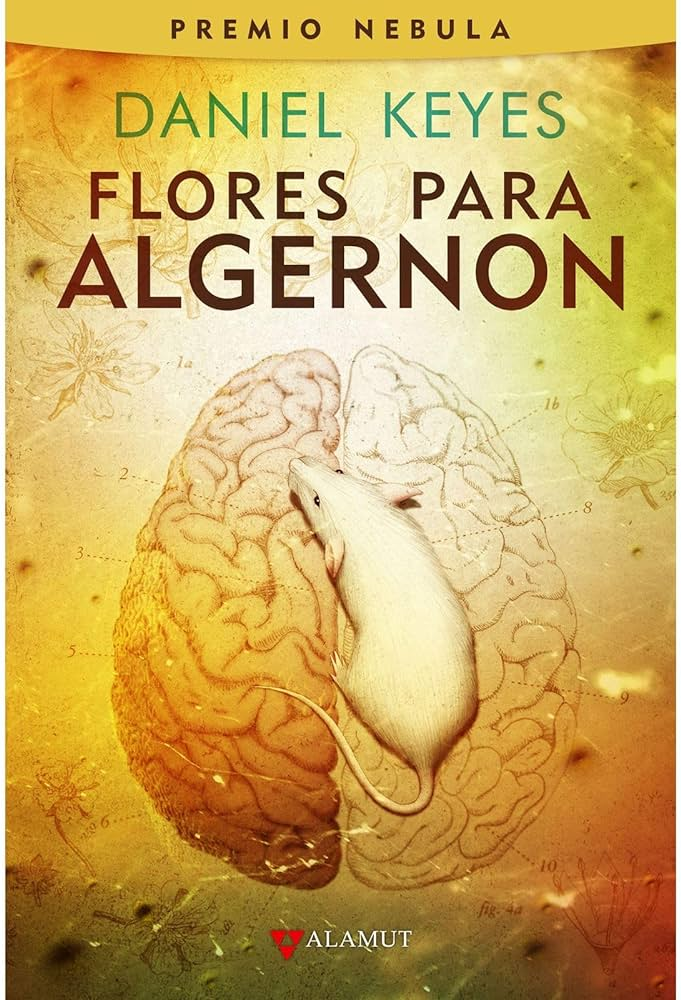

Flores para Algernón
Género: Drama
Autor: Daniel Keyes
Año de publicación: 1959
Link de compra: AMAZON
Género: Drama
Autor: Daniel Keyes
Año de publicación: 1959
Link de compra: AMAZON
En la obra maestra de Daniel Keyes, "Flores para Algernón", nos sumergimos en una exploración profunda de la inteligencia y la humanidad. La historia sigue a Charlie Gordon, un hombre con discapacidades intelectuales, cuya vida da un giro extraordinario cuando es seleccionado para un experimento que aumentará su inteligencia. Narrada a través de los progresos de Charlie en forma de diario, la novela captura sus pensamientos, emociones y la complejidad de su transformación.
Con una prosa conmovedora, Keyes nos lleva a un viaje íntimo mientras Charlie florece intelectualmente. Desde los desafíos iniciales hasta la realización de su creciente intelecto, el lector es testigo de la evolución de un hombre que anhela conocimiento y aceptación. La conexión especial de Charlie con Algernón, un ratón que también experimentó el aumento de inteligencia, agrega capas emocionales a la narrativa.
A medida que la inteligencia de Charlie se expande, enfrenta la soledad, la discriminación y la comprensión dolorosa de la crueldad humana. La novela plantea preguntas profundas sobre la ética de la ciencia, la empatía y la verdadera naturaleza de la inteligencia. Los dilemas éticos surgen cuando Charlie, que inicialmente solo buscaba ser "normal", se convierte en un ser excepcional, obligando a los lectores a cuestionar las implicaciones de alterar la mente humana.
Keyes, con su maestría narrativa, ahonda en temas universales de la condición humana: el deseo de conocimiento, la lucha por la aceptación y la dolorosa realidad de la vulnerabilidad. "Flores para Algernón" no solo es una historia de ciencia ficción, sino un espejo que refleja nuestra propia humanidad y fragilidad. A medida que la narrativa alcanza su conmovedor clímax, se instala una reflexión duradera sobre la belleza y la complejidad de la mente humana.